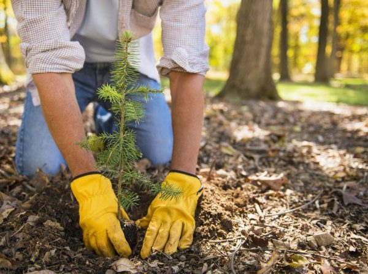

¿Cuál es el mejor momento para plantar un árbol?
Cuando vamos al vivero o a nuestro centro de jardinería habitual seguro que más de una vez hemos visto un árbol que nos apetece tener pero no lo hemos cogido por no tener claro si era el mejor momento para plantarlo. Bueno, si vivimos en una zona de clima cálido prácticamente todo el año es bueno para plantar árboles, excepto claro está el verano. El calor excesivo es una amenaza demasiado seria para los plantines.

¡Consultá por nuestra capacitación!
CURSO: Cuidado básico de nuestros árboles
En este curso Ud. aprenderá los conceptos y técnicas para elegir, establecer y mantener a los árboles.
Ideal para todos aquellos que quieran inciarse en el rubro de la venta
de especies arbóreas. También para los apasionados por la jardinería que deseen realizar el cuidado de los árboles de su hogar.
Podemos diferenciar entre árboles perennes y caducifolios a la hora de plantarlos. Los primeros aunque no pierdan la hoja reducen considerablemente su metabolismo durante la época fría del año. En otoño y a principios de la primavera será la mejor época para plantar este tipo de árboles.
En los árboles de hoja caduca es muy fácil saber cuando entran en periodo de latencia. En otoño comienzan a perder sus hojas y finalmente quedan completamente desnudos. Es el momento ideal para plantar los nuevos ejemplares. Cuando comienzan a brotar en primavera o finales de invierno nos están indicando que el periodo de latencia ha terminado.
El calor intenso es un gran enemigo para los árboles recién plantados. Pero la falta de agua para alimentar sus sistemas radiculares es otro igual. Hay que tener esto muy en cuenta y regar profusa y regularmente los árboles recién plantados durante su primer año de vida. También en invierno si los hemos plantado en otoño, a menos, claro está, que llueva lo suficiente.